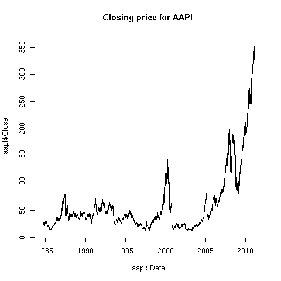

Reading Data from Web Pages
Examples of Reading Web Pages with R
Examples of Reading Web Pages with R
As an example of how to extract information from a web page, consider
the task of extracting the spring baseball schedule for the Cal Bears
from http://calbears.cstv.com/sports/m-basebl/sched/cal-m-basebl-sched.html .
1 Reading a web page into R
Read the contents of the page into a vector of character strings with the
readLines function:
> thepage = readLines('http://calbears.cstv.com/sports/m-basebl/sched/cal-m-basebl-sched.html')
Warning message:
In readLines("http://calbears.cstv.com/sports/m-basebl/sched/cal-m-basebl-sched.html") :
incomplete final line found on 'http://calbears.cstv.com/sports/m-basebl/sched/cal-m-basebl-sched.html'
The warning messages simply means that the last line of the web page didn't contain
a newline character. This is actually a good thing, since it usually indicates that the page
was generated by a program, which generally makes it easier to extract information from it.
Note: When you're reading a web page, make a local copy for testing;
as a courtesy to the owner of the web site whose pages you're using, don't
overload their server by constantly rereading the page.
To make a copy from inside of R, look at the download.file function.
You could also save
a copy of the result of using readLines, and practice on that until
you've got everything working correctly.
Now we have to focus in on what we're trying to extract. The first step
is finding where it is. If you look at the web page, you'll see that the
title "Opponent / Event" is right above the data we want. We can locate this line
using the grep function:
> grep('Opponent / Event',thepage)
[1] 513
If we look at the lines following this marker, we'll notice that the first
date on the schedule can be found in line 536, with the other information
following after:
> thepage[536:545]
[1] " <td class=\"row-text\">02/20/11</td>"
[2] " "
[3] " <td class=\"row-text\">vs. Utah</td>"
[4] " "
[5] " <td class=\"row-text\">Berkeley, Calif.</td>"
[6] " "
[7] " <td class=\"row-text\">W, 7-0</td>"
[8] " "
[9] " </tr>"
[10] " "
Based on the previous step, the data that we want is always preceded by
the HTML tag "<td class="row-text»", and followed by
"</td>". Let's grab all the lines that have that pattern:
> mypattern = '<td class="row-text">([^<]*)</td>'
> datalines = grep(mypattern,thepage[536:length(thepage)],value=TRUE)
I used value=TRUE, so I wouldn't have to worry about the
indexing when I restricted myself to the lines from 550 on. Also notice that
I've already tagged the part that I want, in preparation to the final call to
gsub.
Now that I've got the lines where my data is, I can use gregexpr,
then getexpr (from the previous lecture), and gsub to
extract the information without the HTML tags:
> getexpr = function(s,g)substring(s,g,g+attr(g,'match.length')-1)
> gg = gregexpr(mypattern,datalines)
> matches = mapply(getexpr,datalines,gg)
> result = gsub(mypattern,'\\1',matches)
> names(result) = NULL
> result[1:10]
[1] "02/19/11" "vs. Utah" "Evans Diamond" "1:00 p.m. PT"
[5] "02/20/11" "vs. Utah" "Evans Diamond" "1:00 p.m. PT"
[9] "02/22/11" "at Stanford"
It seems pretty clear that we've extracted just what we wanted - to make
it more usable, we'll convert it to a data frame and provide some titles.
Since it's hard to describe how to convert a vector to a data frame, we'll
use a matrix as an intermediate step. Since there are four pieces of
information (columns) for each game (row), a matrix is a natural choice:
> schedule = as.data.frame(matrix(result,ncol=4,byrow=TRUE))
> names(schedule) = c('Date','Opponent','Location','Result')
> head(schedule)
Date Opponent Location Result
1 02/19/11 vs. Utah Evans Diamond 1:00 p.m. PT
2 02/20/11 vs. Utah Evans Diamond 1:00 p.m. PT
3 02/22/11 at Stanford Stanford, Calif. 5:30 p.m. PT
4 02/25/11 at Coastal Carolina Conway, S.C. 4:00 p.m. ET
5 02/26/11 vs. Kansas State Conway, S.C. 11:00 a.m. ET
6 vs. North Carolina State Conway, S.C. 11:30 a.m. ET
2 Another Example
At http://www.imdb.com/chart is a
box-office summary of the ten top movies, along with their gross profits
for the current weekend, and their total gross profits. We would like
to make a data frame with that information. As always, the first part of
the solution is to read the page into R, and use an anchor to find the
part of the data that we want. In this case, the table has column
headings, including one for "Rank".
> x = readLines('http://www.imdb.com/chart/')
> grep('Rank',x)
[1] 1294 1546 1804
Starting with line 1294 we can look at the data to see where
the information is. A little experimentation shows that the useful
data starts on line 1310:
> x[1310:1318]
[1] " <td class=\"chart_even_row\">"
[2] " <a href=\"/title/tt0990407/\">The Green Hornet</a> (2011)"
[3] " </td>"
[4] " <td class=\"chart_even_row\" style=\"text-align: right; padding-right: 20px\">"
[5] " $33.5M"
[6] " </td>"
[7] " <td class=\"chart_even_row\" style=\"text-align: right\">"
[8] " $40M"
[9] " </td>"
[10] " </tr>"
There are two types of lines that contain useful data: the ones with the title, and
the ones that begin with some blanks followed by a dollar sign. Here's a regular
expression that will pull out both those lines:
> goodlines = '<a href="/title[^>]*>(.*)</a>.*$|^ *\\$'
> try = grep(goodlines,x,value=TRUE)
Looking at the beginning of try, it seems like we got what we want:
> try[1:10]
[1] " <a href=\"/title/tt1564367/\">Just Go with It</a> (2011)"
[2] " $30.5M"
[3] " $30.5M"
[4] " <a href=\"/title/tt1702443/\">Justin Bieber: Never Say Never</a> (2011)"
[5] " $29.5M"
[6] " $30.3M"
[7] " <a href=\"/title/tt0377981/\">Gnomeo & Juliet</a> (2011)"
[8] " $25.4M"
[9] " $25.4M"
[10] " <a href=\"/title/tt1034389/\">The Eagle</a> (2011)"
Sometimes the trickiest part of getting the data off a webpage is figuring
out exactly the part you need. In this case, there is a lot of extraneous information
after the table we want. By examining the output, we can see that we only want the
first 30 entries. We also need to remove the extra information from the title
line. We can use the sub function with a modified version of our regular
expression:
> try = try[1:30]
> try = sub('<a href="/title[^>]*>(.*)</a>.*$','\\1',try)
> head(try)
[1] " Just Go with It"
[2] " $30.5M"
[3] " $30.5M"
[4] " Justin Bieber: Never Say Never"
[5] " $29.5M"
[6] " $30.3M"
Once the spaces at the beginning of each line are
removed, we can rearrange the data into a 3-column data frame:
> try = sub('^ *','',try)
> movies = data.frame(matrix(try,ncol=3,byrow=TRUE))
> names(movies) = c('Name','Wkend Gross','Total Gross')
> head(movies)
Name Wkend Gross Total Gross
1 Just Go with It $30.5M $30.5M
2 Justin Bieber: Never Say Never $29.5M $30.3M
3 Gnomeo & Juliet $25.4M $25.4M
4 The Eagle $8.68M $8.68M
5 The Roommate $8.13M $25.8M
6 The King's Speech $7.23M $93.7M
We can replace the special characters with the following code:
> movies$Name = sub('&','&',movies$Name)
> movies$Name = sub(''','\'',movies$Name)
3 Dynamic Web Pages
While reading data from static web pages as in the previous examples can be
very useful (especially if you're extracting data from many pages), the
real power of techniques like this has to do with dynamic pages, which accept
queries from users and return results based on those queries. For example,
an enormous amount of information about genes and proteins can be found at
the National Center of Biotechnology Information website
(http://www.ncbi.nlm.nih.gov/), much
of it available through query forms. If you're only performing a few queries,
it's no problem using the web page, but for many queries, it's beneficial
to automate the process.
Here is a simple example that illustrate the concept of accessing dynamic
information from web pages. The page
http://finance.yahoo.com provides information about
stocks; if you enter a stock symbol on the page, (for example
aapl for Apple Computer), you will be directed to a page whose
URL (as it appears in the browser address bar) is
http://finance.yahoo.com/q?s=aapl&x=0&y=0
The way that stock symbols are mapped to this URL is pretty
obvious. We'll write an R function that will extract the current price
of whatever stock we're interested in.
The first step in working with a page like this is to download
a local copy to play with, and to read the page into a vector of character
strings:
> download.file('http://finance.yahoo.com/q?s=aapl&x=0&y=0','quote.html')
trying URL 'http://finance.yahoo.com/q?s=aapl&x=0&y=0'
Content type 'text/html; charset=utf-8' length unknown
opened URL
.......... .......... .......... .........
downloaded 39Kb
> x = readLines('quote.html')
To get a feel for what we're looking for, notice that the words "Last Trade:"
appear before the current quote. Let's look at the line containing
this string:
> grep('Last Trade:',x)
45
> nchar(x[45])
[1] 3587
Since there are over 3500 characters in the line, we don't want
to view it directly. Let's use gregexpr to narrow down the search:
> gregexpr('Last Trade:',x[45])
[[1]]
[1] 3125
attr(,"match.length")
[1] 11
This shows that the string "Last Trade:" starts at character 3125.
We can use substr to see the relevant part of the line:
> substring(x[45],3125,3220)
[1] "Last Trade:</th><td class=\"yfnc_tabledata1\"><big><b><span id=\"yfs_l10_aapl\">363.50</span></b></b"
There's plenty of context - we want the part surrounded by <big><b><span ...
and </span>. One easy way to grab that part is to use a tagged
regular expression with gsub:
> gsub('^.*<big><b><span [^>]*>([^<]*)</span>.*$','\\1',x[45])
[1] "363.50"
This suggests the following function:
> getquote = function(sym){
+ baseurl = 'http://finance.yahoo.com/q?s='
+ myurl = paste(baseurl,sym,'&x=0&y=0',sep='')
+ x = readLines(myurl)
+ q = gsub('^.*<big><b><span [^>]*>([^<]*)</span>.*$','\\1',grep('Last Trade:',x,value=TRUE))
+ as.numeric(q)
+}
As always, functions like this should be tested:
> getquote('aapl')
[1] 196.19
> getquote('ibm')
[1] 123.21
> getquote('nok')
[1] 13.35
These functions provide only a single quote; a little exploration of the
yahoo finance website shows that we can get CSV files with historical
data by using a URL of the form:
http://ichart.finance.yahoo.com/table.csv?s=xxx
where xxx is the symbol of interest.
Since it's a comma-separated file, We can use read.csv to read the chart.
gethistory = function(symbol)
read.csv(paste('http://ichart.finance.yahoo.com/table.csv?s=',symbol,sep=''))
Here's a simple test:
> aapl = gethistory('aapl')
> head(aapl)
Date Open High Low Close Volume Adj.Close
1 2011-02-15 359.19 359.97 357.55 359.90 10126300 359.90
2 2011-02-14 356.79 359.48 356.71 359.18 11073100 359.18
3 2011-02-11 354.75 357.80 353.54 356.85 13114400 356.85
4 2011-02-10 357.39 360.00 348.00 354.54 33126100 354.54
5 2011-02-09 355.19 359.00 354.87 358.16 17222400 358.16
6 2011-02-08 353.68 355.52 352.15 355.20 13579500 355.20
Unfortunately, if we try to use the Date
column in plots, it will not work properly, since R has
stored it as a factor. The format of the date is the default
for the as.Date function, so we can modify our
function as follows:
gethistory = function(symbol){
data = read.csv(paste('http://ichart.finance.yahoo.com/table.csv?s=',symbol,sep=''))
data$Date = as.Date(data$Date)
data
}
Now, we can produce plots with no problems:
> aapl = gethistory('aapl')
> plot(aapl$Date,aapl$Close,main='Closing price for AAPL',type='l')
The plot is shown below:

File translated from
TEX
by
TTH,
version 3.67.
On 23 Feb 2011, 08:59.